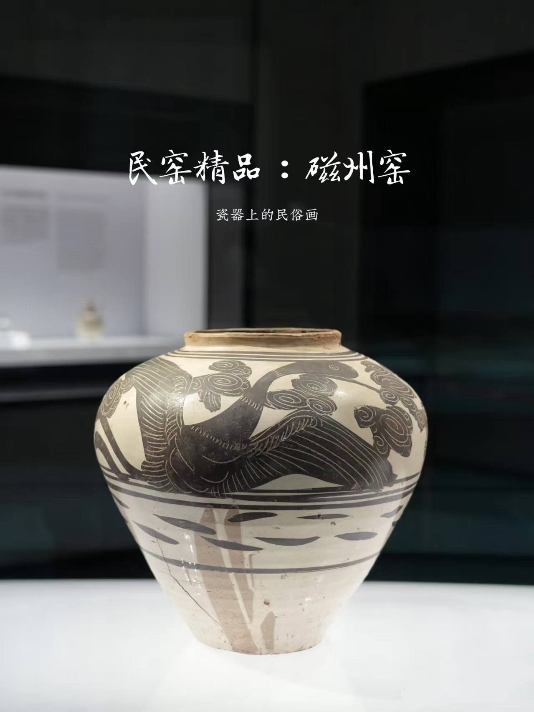
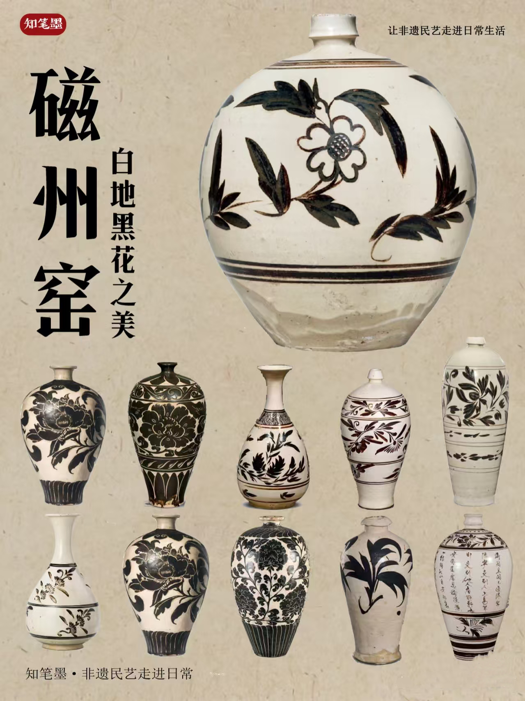

重要历史节点
查看全部 >
前386年
赵国定都邯郸
赵敬侯将国都从晋阳迁至邯郸，开启了赵国历史上最繁荣的时期
前325年
赵武灵王胡服骑射
赵武灵王推行胡服骑射改革，增强军事力量，为赵国争霸奠定基础
前260年
长平之战
赵国与秦国在长平展开大战，赵军四十万被坑杀，国力从此衰落
经典故事地图
查看地图 >
邯郸学步
战国时期
📍
丛台宫廷
讲述了燕国人到邯郸学习赵国人走路姿势，结果不仅没学会赵国步法，反而忘了自己的走路方式，最后爬着回国的故事。比喻刻意模仿反而失去自己本来面目。
完璧归赵
战国时期
📍
赵王宫
蔺相如将和氏璧完好地从秦国带回赵国的故事。后用来比喻把物品完好地归还给物品的主人。
非遗传承
查看全部 >

磁州窑陶瓷
传统技艺
国家级
武安打树花
民间表演
国家级

邯郸鼓书
传统曲艺
省级